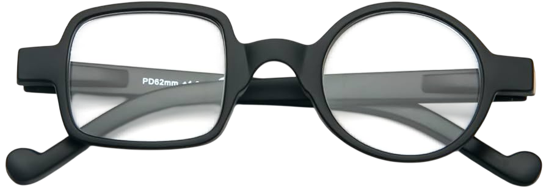
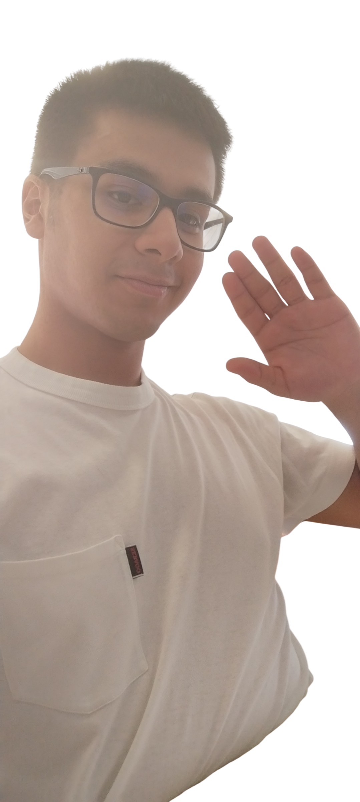

Volevo ringraziarla per la quantità di impegno che ci ha messo a insegnarci perché non ci ha solo provato a farci innamorare della materia, ma ci ha anche cresciuti come un secondo padre. Nei momenti in cui avevo bisogno di quel momento per staccare ho sempre visto le sue attività alla Barontini importanti non solo perché facevano riposare dopo ore e ore di studio, ma anche perché ogni volta c'era una lezione da imparare da ciò che ci diceva. Ho sempre pensato che lei ci abbia fatto non solo da insegnante, ma anche da psicologo perché alcune volte serviva una sua lezione per capire quando qualcosa era sbagliato o meno e sono certo che anche gli altri abbiano provato lo stesso. Ovviamente tutti reperivano una loro lezione da ciò che ci insegnava però credo fermamente nel suo metodo di insegnamento e spero davvero che diventi lo standard per un professore. Se c'è una cosa di cui mi pento è di non essere riuscito a farle vedere nessun progetto degno di ciò che ci ha insegnato prima di andarmene. Mi stavo studiando UnrealEngine ma poi da piccolo ero troppo insicuro sul da farsi e ora sono impegnato con maturità e tutto e quindi mi torna difficile. Ma un giorno glielo faccio avere qualcosa. Tornando al dunque, dato che sto scrivendo di pancia le volevo dire un grandissimo grazie per avermi insegnato e per aver scelto in terza superiore di prenderci come classe. Non avrei mai pensato di arrivare al mio livello attuale di programmazione e nemmeno di sorprendermi da solo di ciò che faccio. Inoltre devo ringraziarla anche per il quantitativo di gite che ci ha fatto fare non ho mai sentito amici che hanno fatto tutte le esperienze che abbiamo fatto noi. Questo dice tanto eh. Continui così e non smetta mai di far capire i ragazzi cosa è un vero professore. Lei è proprio la definizione di ciò che dovrebbe essere.
